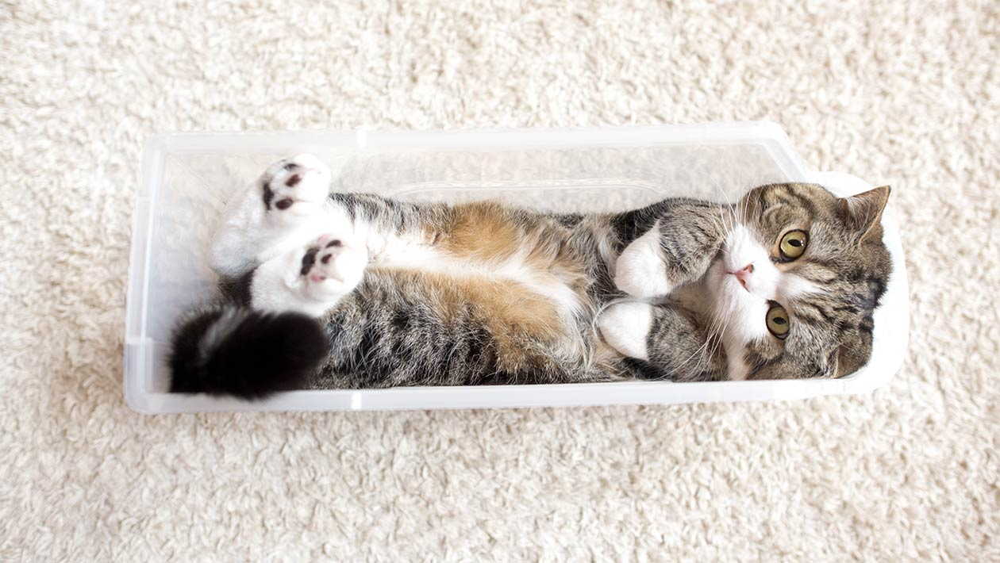

<!DOCTYPE html>
<html lang="en">
 <meta charset="UTF-8" />
    <meta name="viewport" content="width=device-width, initial-scale=1.0" />
    <meta name="description" content="Cats rule the world!">
    <meta name="keywords" content="Cat, cats, world, rule">
    <meta name="author" content="Oksana Kovalenko">
    <meta name="robots" content="index,follow">
    <meta name="subject" content="Cats' blog">

    <title>Cats of the world</title>

    <link rel="stylesheet" href="assets/css/reset.css" />

    <link
      rel="stylesheet"
      href="https://cdnjs.cloudflare.com/ajax/libs/font-awesome/4.7.0/css/font-awesome.min.css"
    />
    <link
      href="https://fonts.googleapis.com/css?family=Source+Sans+Pro:400,700&display=swap"
      rel="stylesheet"
    />
    <link rel="stylesheet" href="assets/css/global.css" />
    <link rel="stylesheet" href="assets/css/icons.css" />

    <link rel="stylesheet" href="assets/css/blog/menu.css" />
    <link rel="stylesheet" href="assets/css/blog/header.css" />
    <link rel="stylesheet" href="assets/css/blog/aside.css" />
    <link rel="stylesheet" href="assets/css/blog/author.css" />
    <link rel="stylesheet" href="assets/css/blog/subscribe.css" />
    <link rel="stylesheet" href="assets/css/blog/search.css" />
    <link rel="stylesheet" href="assets/css/blog/comments.css" />
    <link rel="stylesheet" href="assets/css/blog/tags.css" />
    <link rel="stylesheet" href="assets/css/blog/main.css" />
</html>
<body>
	<header class="header">
      <div class="container">
        <a href="#" class="logo">
          
        </a>
        <nav class="navigation">
          <div class="menu-toggle">
            <input type="checkbox" />

            <span></span>
            <span></span>
            <span></span>

            <ul class="menu">
              <li class="menu-item"><a href="#" class="menu-link">Home</a></li>
              <li class="menu-item"><a href="#" class="menu-link">About</a></li>
              <li class="menu-item">
                <a href="#" class="menu-link">Contact us</a>
              </li>
            </ul>
          </div>
          <ul class="social">
            <li class="social-item">
              <a href="#" class="fa fa-youtube"></a>
            </li>
            <li class="social-item">
              <a href="#" class="fa fa-twitter"></a>
            </li>
            <li class="social-item">
              <a href="#" class="fa fa-instagram"></a>
            </li>
            <li class="social-item">
              <a href="#" class="fa fa-facebook"></a>
            </li>
          </ul>
          <a href="#" class="fa fa-search search"></a>
        </nav>
      </div>
    </header>
	
	<div class="wrapper container">
      <main class="main container">
        <!-- <div class="container"> -->
          <ul class="card-list">
            
            <li class="card">
              <div class="image">
                
              </div>
              <div class="text">
                <h3 class="card-title">Lilu, The Cat With Glasses</h3>
                <p>
                  One of the most popular photos on social networking websites consists of a grey cat wearing black glasses. You have probably seen this photo somewhere on the internet, but you are probably unaware of the name of the photographer who took the shot. His name is Andy Prokh and he actually has a whole series of portrait photos of the cat as well as his daughter.
                </p>
              </div>
              <div class="card-information">
                <span class="timestamp"><i class="fa fa-clock-"></i> 1 mins ago</span>
                <span class="comments"><i class="fa fa-comments"></i><a href="#">0 comments</a></span>
                <span class="likes"><i class="fa fa-star"></i><a href="#">2</a></span>
              </div>
            </li>

            <li class="card">
              <div class="image">
                
              </div>
              <div class="text">
                <h3 class="card-title">Binarystudiocat Bulka, the office cat</h3>
                <p>
                  My name is Bulka. Still got 7 lives. Work in IT, Full Stack Evil, all I do is sleep and try to help out hoomans with their projects whenever they need me. 
                </p>
              </div>
              <div class="card-information">
                <span class="timestamp"><i class="fa fa-clock-"></i> 1 month ago</span>
                <span class="comments"><i class="fa fa-comments"></i><a href="#"> 0</a></span>
                <span class="likes"><i class="fa fa-star"></i><a href="#">118</a></span>
              </div>
            </li>

            <li class="card">
              <div class="image">
                
              </div>
              <div class="text">
                <h3 class="card-title">Maru, Master Of Boxes</h3>
                <p>
                  Remember the Japanese cat who has won millions of people's hearts on YouTube with his silly antics and obsession for boxes? Maru, a perk-eared Scottish Fold, has become an internet meme and even appeared on Ellen DeGeneres' show and various other TV shows in the US and many other countries. We have spoken to Maru and his hooman and got the inside scoop on Maru's life.
                </p>
              </div>
              <div class="card-information">
                <span class="timestamp"><i class="fa fa-clock-"></i>2 years ago</span>
                <span class="comments"><i class="fa fa-comments"></i><a href="#">12</a></span>
                <span class="likes"><i class="fa fa-star"></i><a href="#">52</a></span>
              </div>
            </li>

            <li class="card">
              <div class="image">
                
              </div>
              <div class="text">
                <h3 class="card-title">Honey Bee, The Blind Hiking Cat</h3>
                <p>
                  Meet Honey Bee, a rescue cat originally from Fiji who is currently living in the Seattle area.
                  Despite her handicap, Honey Bee enjoys exploring the rugged terrain just as much as any hiking dog might – and considerably more than some other cats might.
                </p>
              </div>
              <div class="card-information">
               <div class="card-information">
                <span class="timestamp"><i class="fa fa-clock-"></i> 3 years ago</span>
                <span class="comments"><i class="fa fa-comments"></i><a href="#">37</a></span>
                <span class="likes"><i class="fa fa-star"></i><a href="#">112</a></span>
              </div>
            </li>

            <li class="card">
              <div class="image">
                
              </div>
              <div class="text">
                <h3 class="card-title">Streetcat Bob</h3>
                <p>
                  Street musician James Bowen and his loyal ginger Tom cat, Bob, found each other in 2007 when their lives were at a low ebb. Their story is told in the book A Street Cat Named Bob. His best is probably the high-five, which he has really perfected over the years.
                </p>
              </div>
              <div class="card-information">
                <span class="timestamp"><i class="fa fa-clock-"></i> 4 years ago</span>
                <span class="comments"><i class="fa fa-comments"></i><a href="#">53</a></span>
                <span class="likes"><i class="fa fa-star"></i><a href="#">220</a></span>
              </div>
            </l
            i>
          </ul>
        <!-- </div> -->
      </main>

      <aside class="aside">

        <section class="author">
          
          <h3 class="title">Oksana Kovalenko</h3>
          <p class="descr">Own noisy cat, hate him, love him</p>
        </section>

        <ul class="social">
          <li class="social-item">
            <a href="#" class="fa fa-youtube"></a>
          </li>
          <li class="social-item">
            <a href="#" class="fa fa-twitter"></a>
          </li>
          <li class="social-item">
            <a href="#" class="fa fa-instagram"></a>
          </li>
          <li class="social-item">
            <a href="#" class="fa fa-linkedin"></a>
          </li>
        </ul>

        <form class="subscribe">
          <h3 class="title">Join Us</h3>
          <input class="input" type="text" placeholder="Username" required>
          <input class="input" type="email" placeholder="Email" required>
          <button class="btn">Subscribe</button>
        </form>
        <form class="search-form">
          <h3 class="title">Looking for</h3>
          <input type="text" placeholder="Key search words..." />
          <button class="btn">Search</button>
        </form>

        <section class="tags">
          <h3 class="title">Popular Tags</h3>
          <ul class="tags-list">
            <li><a href="#" class="tag">Box</a></li>
            <li><a href="#" class="tag">Cat</a></li>
            <li><a href="#" class="tag">Hiking</a></li>
            <li><a href="#" class="tag">Bob</a></li>
            <li><a href="#" class="tag">Streetcat</a></li>
            <li><a href="#" class="tag">Bulka</a></li>
            <li><a href="#" class="tag">Photo</a></li>
            <li><a href="#" class="tag">Glasses</a></li>
            <li><a href="#" class="tag">Office</a></li>
          </ul>
        </section>

        <section class="last-comments">
          <h3 class="title">Last Comments</h3>
          <ul class="list-comments">
            <li class="comment">
              
              <div class="text">
                <div class="row">
                  <h4 class="name">Winnie Wong</h4>
                  <span class="timestamp">1 min ago</span>
                </div>
                <p class="descr">
                  I already put it on the article on this little lady, but : you are amazing, you who adopted this nice cat and take good care of her.
                </p>
              </div>
            </li>
            <li class="comment">
              
              <div class="text">
                <div class="row">
                  <h4 class="name">Megen Morin</h4>
                  <span class="timestamp">3 days ago</span>
                </div>
                <p class="descr">
                  I read the book about this cat! It's a wonderful tale about how Bob and his human found each other and rescued each other! Awesome!
                </p>
              </div>
            </li>
            <li class="comment">
              
              <div class="text">
                <div class="row">
                  <h4 class="name">Kathy Keene</h4>
                  <span class="timestamp">1 month ago</span>
                </div>
                <p class="descr">
                  This cat has such pretty eyes!
                </p>
              </div>
            </li>
            <li class="comment">
              
              <div class="text">
                <div class="row">
                  <h4 class="name">Roy Meyer</h4>
                  <span class="timestamp">2 years ago</span>
                </div>
                <p class="descr">
                  Maru is a legend. I have actually purchased a book about this cat, and that is sort of weird & sad.
                </p>
              </div>
            </li>
          </ul>
        </section>

      </aside>
    </div>

    <footer class="footer">
      <a class="logo" href="#">
        
      </a>

      <div class="contacts">
        <h3 class="title">Contacts</h3>
        <ul class="contacts-list">
          <li class="contact">
            <a href="https://t.me/okkova">
              <span>okkova</span>
              <i class="fa fa-telegram"></i>
            </a>
          </li>
          <li class="contact">
            <a href="https://www.google.com.ua/maps/@50.4269761,30.5174295,13.32z?hl=ru">
              <span>Kiev</span>
              <i class="fa fa-map-marker"></i>
            </a>
          </li>
          <li class="contact">
            <a href="mailto:ok.oksana.kovalenko@gmail.com">
              <span>ok.oksana.kovalenko@gmail.com</span>
              <i class="fa fa-envelope-open"></i>
            </a>
          </li>
        </ul>
      </div>

      <span class="copyright">&copy; Oksana Kovalenko, 2019</span>
    </footer>
</body>